Eén koers tegelijk. Scherp, groot, en dan de volgende.
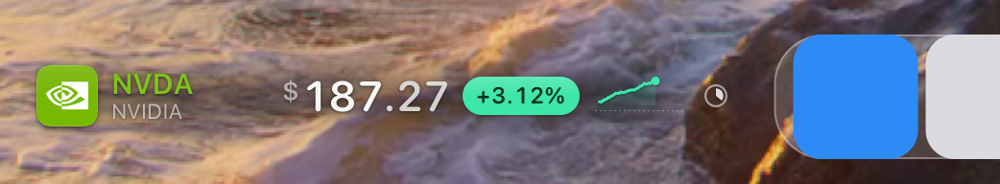
02 Idee
Rack focus. Wat komt, wordt scherp. Wat gaat, vervaagt.
Eén raster voor alle koersen: niets verspringt
Kolommen stellen apart scherp, links naar rechts
Geen achtergrond, of glas als je dat wil
03 Constructie
punten, op 14 pt tekst
TegelEen app-icoon: 57% van de hoogte, hoek 22,5% met continue curve, één glans en een rand van 1 pixel.
NaamTicker in merkkleur, 15 semibold, boven de naam zonder "Inc." of "N.V.", 11 regular. Wordt per woord ingekort.
Prijs22 rounded, tabulair, rechts uitgelijnd zodat decimalen gelijk staan. Munt kleiner, aan de kapitaalhoogte. Decimalen een stap stiller.
BewegingVolle pil in mint of koraal met diepe tekst. Leesbaar op elke foto. Alle pillen even breed.
De dagVan opening tot slot: om 11 uur staat de lijn een kwart ver. Stippellijn = waar de beweging van gemeten wordt.
04 Toestanden
voorbeelddagen
Stijgt
Daalt
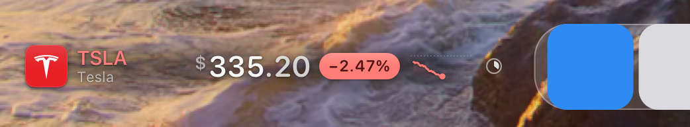
Vlak
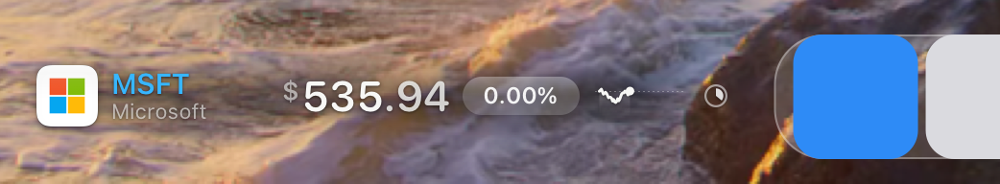
Gesloten
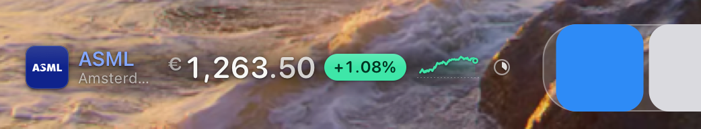
05 Beweging
live, op 1×, pixel voor pixel
0 ms
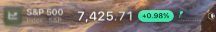
211 ms
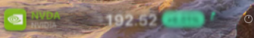
286 ms
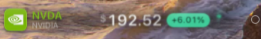
361 ms
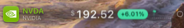
512 ms
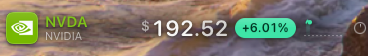
Uit: 0,26 s, 5 px wazig, 6 pt omhoog. In: 0,52 s, uit de wazigheid. 35 ms tussen kolommen. Een nieuwe prijs tikt alleen de kolommen die veranderen, in de richting van de koers.
06 Achtergrond
instelling
Helder
Glas
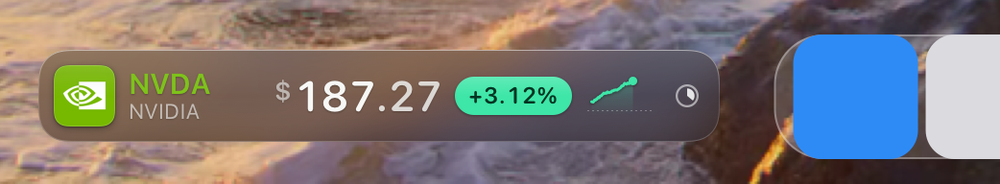
Glas: het materiaal van het Dock. Hoeken concentrisch met de tegel (7,2 + 8 = 15,2). Helder: een zachte sluier achter het raster houdt de tekst leesbaar op een drukke foto.
07 Tegels
logo, of wat ervoor in de plaats komt
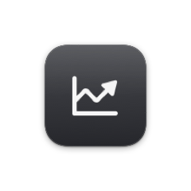
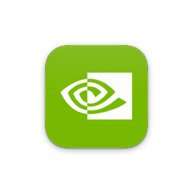
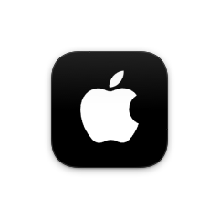
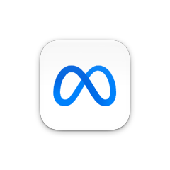
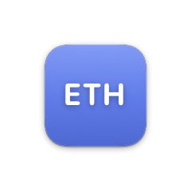
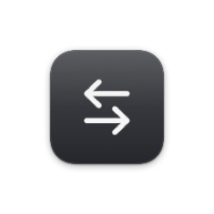
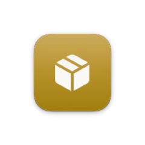
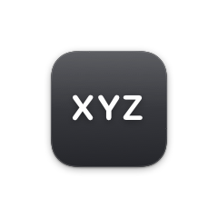
08 Type
SF Pro · Rounded
$187.27
NVDANVIDIA
09 Kleur
donker · licht
Mint#3EE6A8 tekst #013522
Koraal#FF7D76 tekst #4E1413
Licht +#08875A
Licht −#D02E27
Grafiet#37383D tegel zonder logo
Inkt#F7F7F5 op donker
Inkt#141416 op licht
Vlakwit 20%
10 Lichte wallpaper
donkere inkt, witte sluier
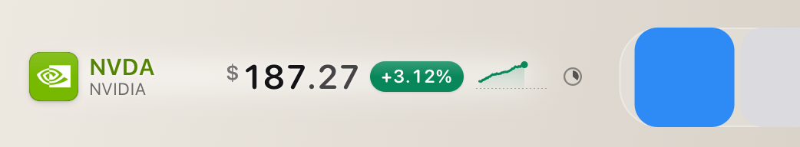
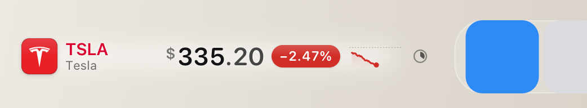
11 Maten
12 · 14 · 18 pt
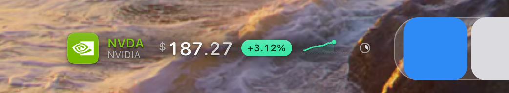
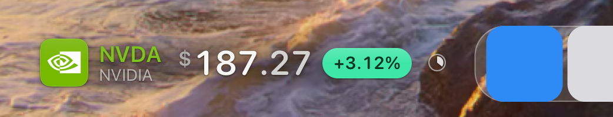
Te smal? Eerst wordt de naam korter, dan de lucht, dan de grafiek smaller. Pas daarna verdwijnt de grafiek.
12 Aftellen
geen spinner
net begonnen
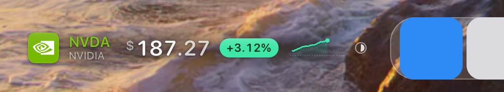
halfweg
bijna
Een wijzerplaat bij het Dock: een fijne ring met een taartpunt die rondgaat. Een losse boog leest als laden. Onder de muis staat hij stil, en daarna loopt hij verder waar hij was. Bij elke wissel draait hij eerst terug.
13 Smal
MacBook, lang Dock · live, 2×
173 pt
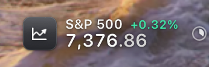
88 pt
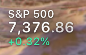
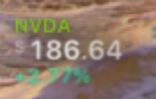
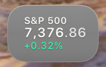
Naast een Dock van zeventien iconen blijft op 1512 pt maar 74 pt over. Tape verdween onder 120 pt. Nu stapelt Focus ticker, prijs en beweging, op leesbare maat, tot 56 pt. Een krappe strook krijgt de helft van de schermmarge terug.
14 Scherpte
voor · na, pixel voor pixel
symbool, 1×: verkleinde bitmapvector op ware grootte
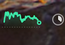
grafiek, 2×: elke minuut
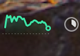
gemiddeld per pixelkolom
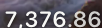
tekst, 1×: dun
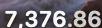
zoals macOS zelf (+9% contrast)
Ook: het klokje op schermresolutie (was 1×), tekst op hele pixels, venster op hele punten. Getest en verworpen: 4× renderen en verkleinen (niet scherper) en een strakkere schaduw (geen verschil).